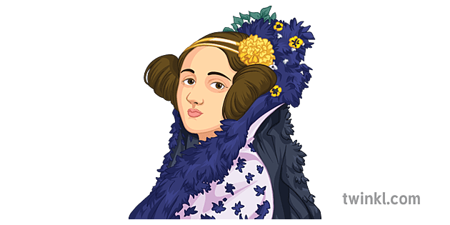

B i o g r a f í a
Ada Augusta Byron nació en Londres en 1815. Era hija de la adinerada Annabella Milbanke y el poeta Lord Byron. El matrimonio no duró mucho y, cuando Ada tenía un mes, su madre abandonó a su esposo. La joven Ada recibió lecciones de matemáticas y ciencia en un intento, por parte de su madre, de erradicar la herencia de locura poética que llevaba en los genes. Su infancia transcurrió entre tutores y estudios, lastrada por una mala salud que arrastraría a lo largo de toda su vida.
A pesar de que en siglo XIX no era frecuente que las mujeres estudiasen ciencia, Ada tuvo la suerte de contar con grandes maestros, como el matemático Augustus De Morgan o la astrónoma escocesa Mary Somerville. Fue precisamente Sommerville quien le presentó al matemático Charles Babbage, con quien trabó una gran amistad y una fructífera colaboración. En 1835 Ada se casó con el barón William King, que posteriormente se convirtió en conde de Lovelace. Durante su matrimonio siguió estudiando matemáticas. Tras el nacimiento de su tercer y último hijo, Ada comenzó a colaborar con Babbage en la máquina analítica.
Su pasión por las matemáticas y su personalidad poco convencional no siempre fueron bien vistas en la corte. Se aficionó al juego y en 1851 trató de crear con unos amigos un modelo matemático para acertar en las apuestas. En los últimos años de su vida su salud se deterioró gravemente, hasta que falleció en 1852, poco antes de cumplir 37 años.